Last updated: December 2nd, 2018
Last updated: December 2nd, 2018Welcome
 Follow Us
Follow Us
 Subscribe Us
Get Help
Subscribe Us
Get Help
Thank you very much for purchasing our theme. We've put a lot of hard work into it, and we hope you love it as much as we do. As far as the documentation is concerned, we have tried to cover as much as possible to help you get your new theme up and running and to help you customise it.
If you have any questions or problems that aren't answered here, please feel free to create a new ticket on our support site.
We love to hear your feedback - if you find any bugs or have suggestions for improvements please get in touch. Nearly all of the time we follow your advice and issue a rapid update to Escapium.
If you like our work, please rate it. If you’re about to rate it with less than 5 stars, please let us know the reason first and we will do our best to improve the theme. Thanks so much!
WordPress Information
Since WordPress is constantly being updated information about how to install WordPress may become out of date, so you always can read official guide HERE
Below are all the useful links for WordPress information:
- WordPress Codex – general info about WordPress and how to install on your server.
- First Steps With WordPress – general information that covers a wide variety of topics.
- FAQ New To WordPress – the most popular FAQ’s regarding WordPress.
Theme Installation
Once you've downloaded the installation file on ThemeForest, extract it and locate a file called escapium.zip. You can install the theme by using one of two installation methods:
WordPress upload
- Login to WordPress admin.
- Go to Admin panel > Appearance > Themes > Add New > Upload Theme.
-
Click on Choose File and select
escapium.zip. - Click on Install Now.
- When your theme is successfully installed, click Activate to activate the newly installed theme.
FTP upload
- Using FTP client, login to the server where your WordPress website is hosted.
-
Using FTP client, navigate to the
/wp-content/themes/directory under your WordPress website's root directory. - Using FTP client, upload the Escapium directory to themes directory on remote server.
- Once uploaded, navigate to Dashboard > Appearance > Themes in the WordPress Dashboard and hit Activate below your newly uploaded theme.
When you use first or second method, please make sure that you're uploading the escapium.zip file, not entire package you downloaded. If you upload the wrong file you will get an error stating “Error: missing style.css stylesheet.”
Once installation is complete, your Escapium theme will be ready to use. You should now see Escapium theme as active.
Installing Required Plugins
When you first install the theme you'll see a popup on your dashboard from the theme asking you to install a number of plugins.
Allow the theme to install these for you. The plugins which are installed are dependent of the theme, the images below are for illustrative purposes only.
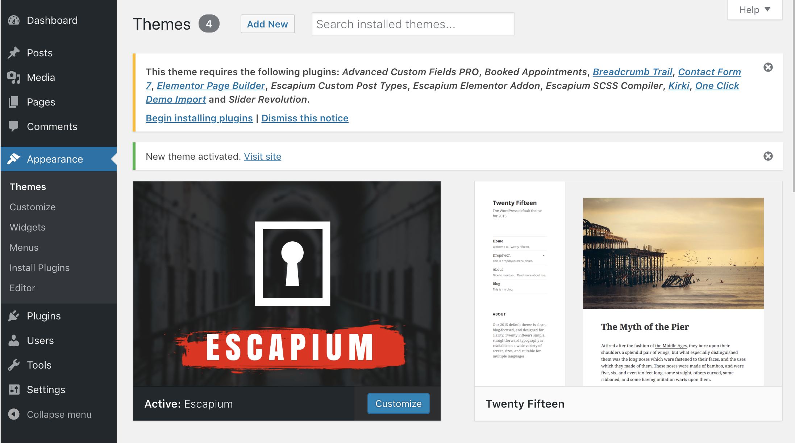You can install all plugins at the same time by checking the box at the top of the this list.
Importing Demo Data
We have included the exported files from our demo, this allows you to quickly set up your theme the same way our demo is set up.
- Log-in to your WordPress backend and navigage to Appearance > Import Demo Data.
- Click on Import Demo Data only once.
- That's it! :)
You now just need to wait for the importer to finish. This might take a few minutes depending on your hosting server speed.
Permalinks Structure
Finally, if you have not done so already, its highly advisable to update your permalink settings. To do this, head to Settings > Permalinks and select any option other than default. We recommended 'postname' - as you can see below.
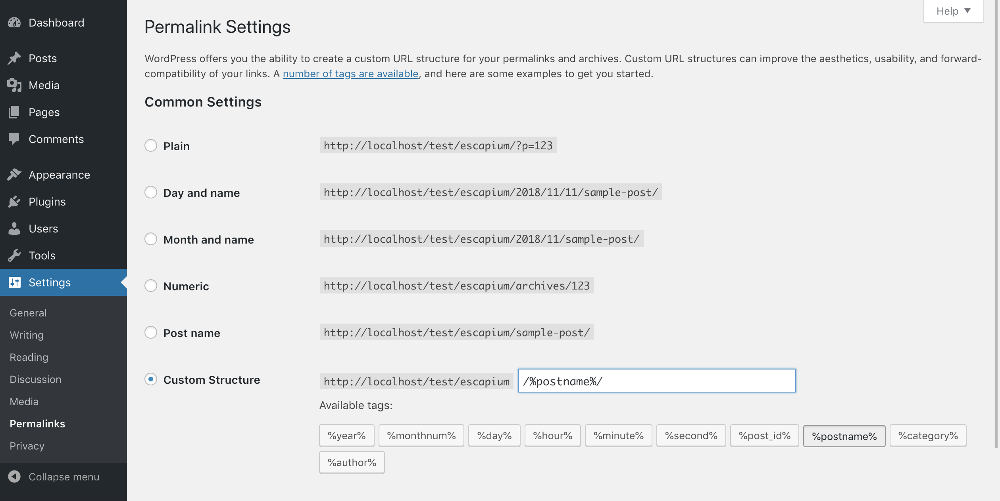Theme Customization
Customize panel allows you to customize color styling, typography, text etc. of the theme. Go to Appearance > Customize to start customizing the theme.
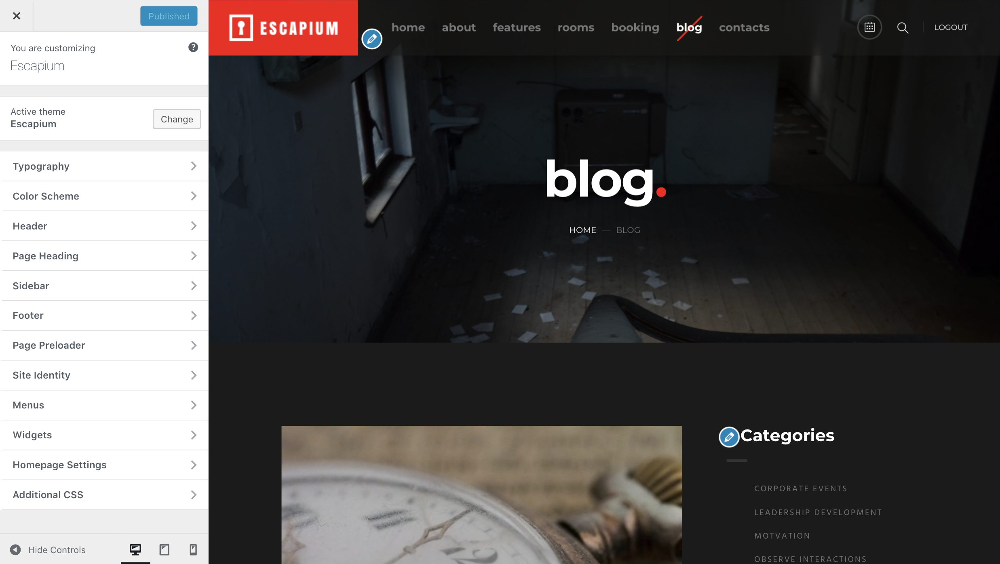-
Typography
Customize theme Typography in this section
-
Color Scheme
Here you can customize theme colors.
-
Header
The section allows you to setup site Header.
-
Page Heading
Customize Page Heading in this section.
-
Sidebar
This section allows to change Sidebar settings.
-
Footer
You can setup Footer settings here.
-
Page Preloader
Want to show or hide preloader? Jump into this section.
-
Site Identity
You can set the basic settings here.
-
Menus
Here you can manage theme menus.
-
Widgets
Here you can manage theme widgets.
-
Additional CSS
Need to tweak something but can't approciate option? Just add your custom CSS here.
-
Import/Export
Here you can import/export theme options.
Setting Up a Logo
- Go to Appearance → Customize → Site Identity → Logo
- Click on Select Logo
- Upload your logo or choose from existing.
- Crop your image or Skip cropping.
- Click on Publish.
Setting Up a Favicon
- Go to Appearance → Customize → Site Identity → Site Icon
- Click on Select Image
- Upload your favicon or choose from existing.
- Crop your image or Skip cropping.
- Click on Publish.
Changing Colors
To change theme colors navigate to Appearance > Customize > Color Scheme
Here you can control the colors site.
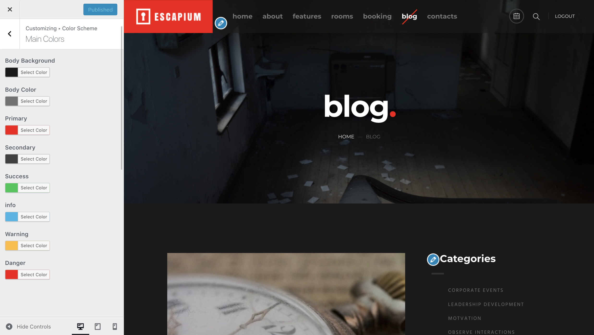Typography Customization
To customize theme typography navigate to Appearance > Customize > Typography to start customizing the theme Typography.
Here you can control Typography options such as Font Family, Font Weight, Font Size, Line Height, Font Color.
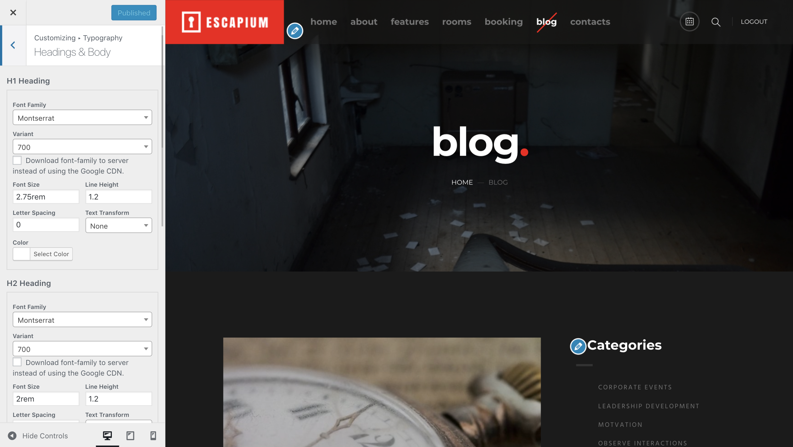-
Headings & Body
Customize H1-H6 headings and body typography in this section.
-
Main Navigation
Customize theme Main Navigation typography in this section.
-
Widget Title
Customize theme widget title typography in this section.
-
Page Heading
Customize theme page heading typography in this section.
Widgets
To build your site you can also use Widgets. Navigate to Appearance > Widgets and using drag-and-grop interface place widgets into Widgets Area (Sidebar, Footer Widget Area 1 etc.)
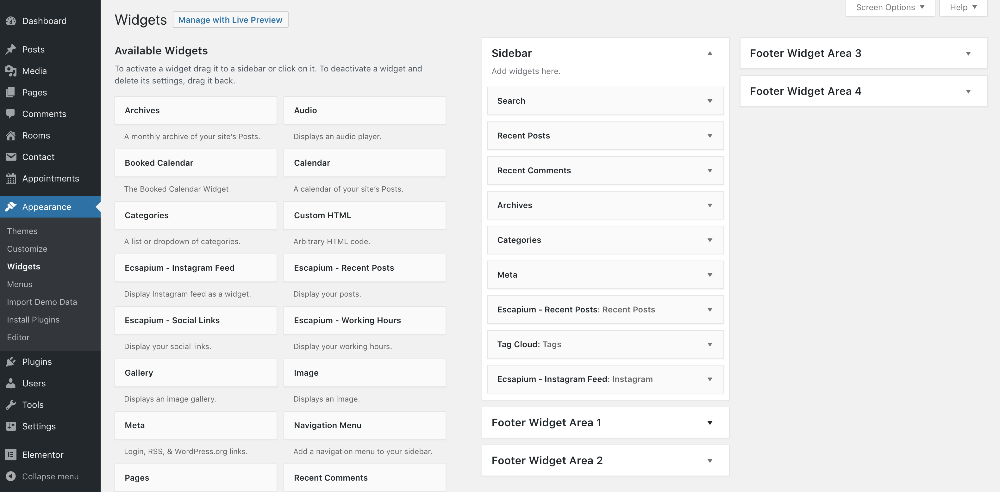Get more info about widgets here.
Rooms
Escapium Custom Post Types plugin created to add to your WordPress site Custom Post Type Rooms.
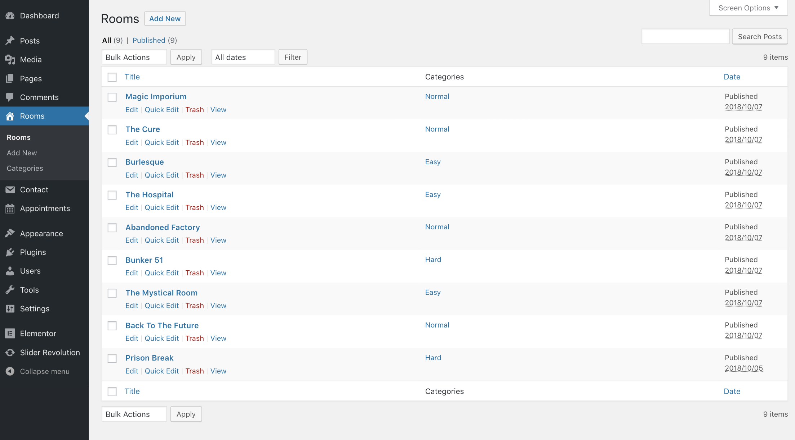Creating Room
To create Room please follow next steps:
- Go to Rooms → Add New
- Enter room title and room description. 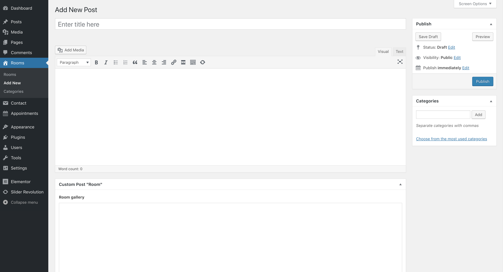
-
Add a category, e.g. Normal
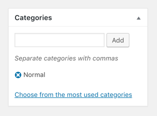
Later, categories can be used to filter rooms. 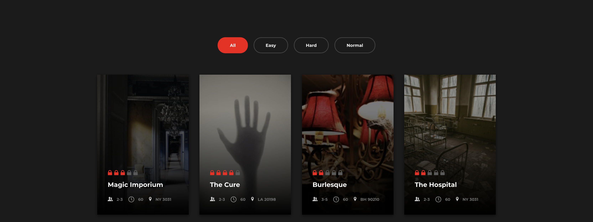 -
To add images to Room Slider, click the Add to gallery. Upload your images or choose from existing. Then click Select.
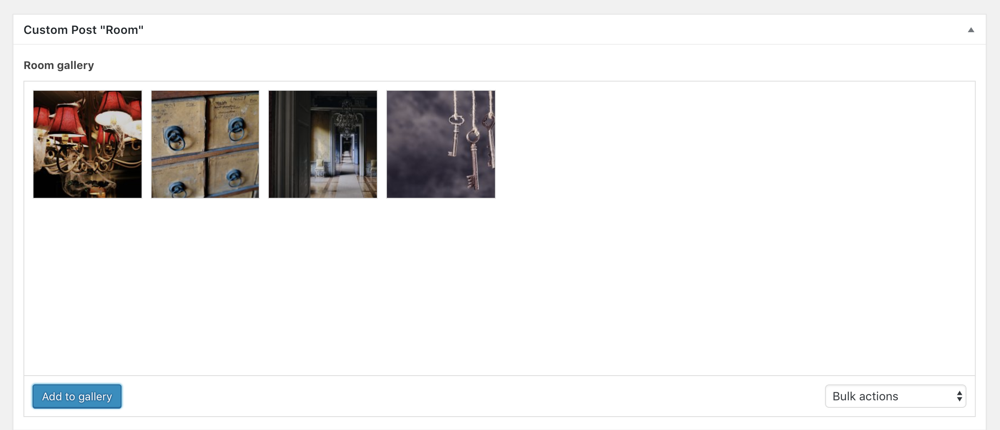
Note, the first image is displayed as a room thumbnail. - Fill the following fields: Room rating,Number of players, Duration, Phone number, Email, Skype, Address, Button Text.
-
Add a Booked Shortcode to your Room, e.g. [booked-calendar]
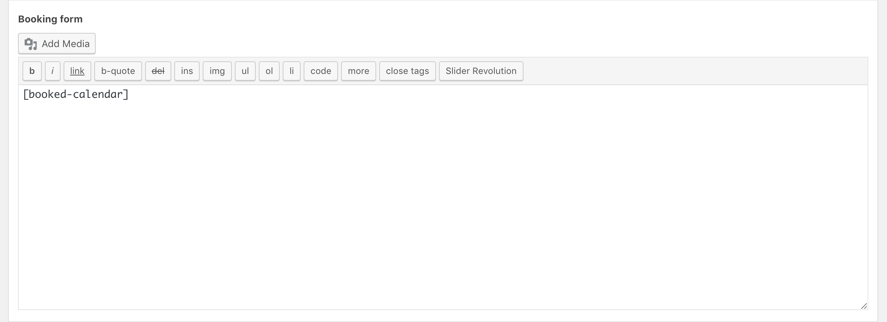
Elementor
Escapium theme bundled with Elementor Page Builder plugin. To get information how to work with the plugin please visit official documentation page.
All Shortcodes are integrated in Elementor you can find them under E tab.
Booked
Escapium theme bundled with Booked - Appointment Booking for WordPress plugin. To get information how to work with the plugin please visit official documentation page.
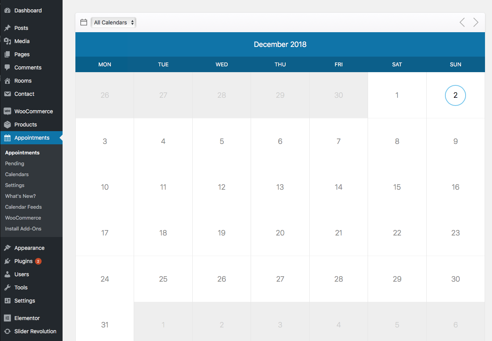Contact Form 7
Contact Form 7 is our recommended form plugin for WordPress. It is a simple but powerful form creator for WordPress. Here we will show you how to use Contact Form 7 to create and edit a basic form.
After Contact Form 7 is installed, you will find a new menu item in your WordPress admin area called Contact, here is where your forms and created and edited. From the Contact main screen, you will see your first contact form, its usually a default form called Contacts OR if you have imported the demo data for our theme you may see a few forms that we have made specially for you.
<div class="row">
<div class="col-md-6">
[text* your-name placeholder "Name"]
</div>
<div class="col-md-6">
[email* your-email placeholder "Email Address"]
</div>
</div>
[textarea your-message placeholder "Your Message..."]
[submit class:btn class:btn-primary class:btn-lg class:btn-block "Send Message"]
You can add additional input from the right drop down, after setting up your form click Save button from right.
Child Theme
Child themes are separate themes that rely on a parent theme for most of their functionality. If you are using a child theme, WordPress will check your child theme first to see if a specific functionality exists. If it doesn’t, it will use the parent theme. This is great because it allows you to modify only what you need.
Child themes should always be used if you plan on modifying even a single character in your theme.
If you plan to edit the theme files, like style.css, we're suggesting you to install both escapium.zip and escapium-child.zip themes, then activate the child theme. Child themes are great because allow you to edit the theme and also lets you update the original theme in the future, without loosing your edited files work.
More about child themes and how to use them you can read here: LINK.
Translate Theme
There are 2 options to translate your theme:
Translation with Loco Translate plugin
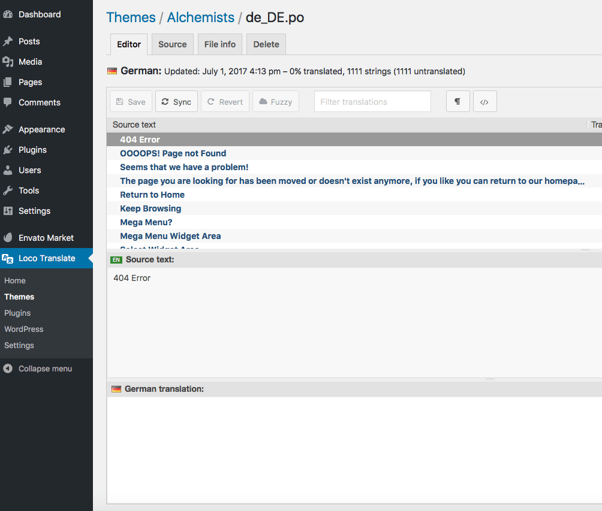You can find .POT file in next folder wp-content/themes/escapium/languages/
Translation with Poedit application
- Download and install PoEdit if you haven’t done so already.
-
Open
wp-content/themes/escapium/languages/escapium.potwith PoEdit and translate all string in your language. - Go to File → Save as… to save your translations in a .po file. If you do not know how to name it, take a look at this page: http://codex.wordpress.org/WordPress_in_Your_Language.
-
Go to File → Compile to .mo and save your .mo file next to the .po file in
/wp-content/themes/escapium/languages/ - Or you can set your PoEdit to always compile a .mo file when saving changes by clicking File → Preferences and on the Editor tab check the Automatically compile .mo file on save box.
Updating Translation
After updates, you can update your .po file by opening it and then going to Catalog → Update from POT file. Choose the file and it will be updated accordingly.
Keeping Translation Files Upgrade Safe
You can put your .po/.mo files in the WP_LANG directory which will keep them safe from updates. This is usually the wp-content/languages/ directory.
So for example, you need put your .po/.mo files in wp-content/languages/themes/escapium-LOCALE.mo, replacing LOCALE with your language code.
How to Update Theme
There are 3 methods to update WordPress themes.
Auto Udates via Envato Market Plugin (recommended)
- Login to the ThemeForest account that was used to purchase the theme.
- First, you need to generate your personal token.
- Copy your Personal Token to clipboard.
- Go to Dashboard → Envato Market and click on Add Item button.
-
In the opened modal window enter generated personal token and Item ID (you can find this ID by viewing the item address on ThemeForest, e.g.
https://themeforest.net/item/escapium-escape-room-game-wordpress-theme/XXXXXXXX) for the Escapium theme it's XXXXXXXX
Once your theme is set up WordPress will periodically check for updates, so keeping your item up to date is as simple as a few clicks.
You can add a global token to connect all your items from your account, and/or connect directly with a specific item using a singe-use token & item ID. When the global token and single-use token are set for the same item, the single-use token will be used to communicate with the API.
Update Through WordPress Admin Panel
- Download the latest Escapium file from ThemeForest.
- Open Appearance -> Themes
- Choose another theme (not Escapium)
- Delete Escapium
- Install updated theme in Appearance -> Themes -> Install Themes -> Upload
FTP Update
- Download the latest Escapium file from ThemeForest.
- Extract it and locate
escapium.zip. - Extract
escapium.zipand locate the Escapium folder. - Replace content of the Escapium folder to the
/wp-content/themes/escapiumfolder of your web site.
Credits
Don`t forget to rate it
Follow UsFollow Us
Subscribe Us
Get Help